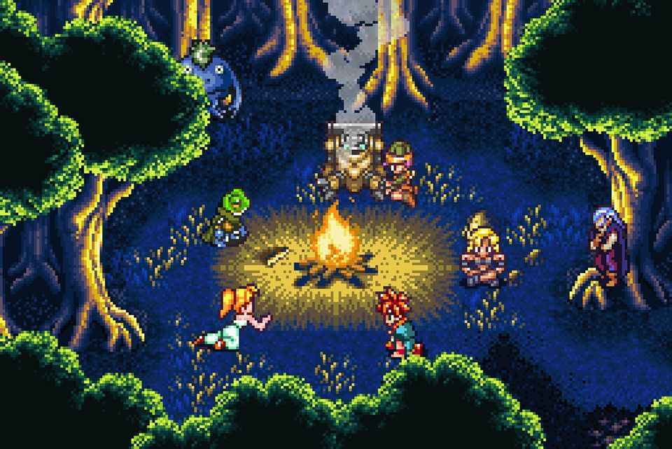

I erroneously called this A Bonfire Conversation but it's actually a A Campfire Conversation. Anyway - I thought I'd go down the good development practice of figuring out what the hell I'm making, at least in part, before I pop open Unity. So what am I trying to achieve with this game?

The Premise
I really love the concept of Home, a game whose ending changes based on the answers that you provide in game. In working on Project Sword, I ended up with an Ink powered dialogue system that can set in game variables through ScriptableObjects and then raise events to alert that the variable was changed. I started thinking about a scene in the woods that changed the environment to match. In my mind, there are two readily apparent exciting ideas:
- Tell a scary story, adjust the setting to enhance the scariness of the story.
- Have a conversation about some event in life, adjust the setting to reflect the conversation.
Since it's Ink powered, and it can handle complicated branching choose-your-own-adventure style dialogues, I want to explore this fully and in the process really polish the dialogue system.
Stuff in the Game
A short list of what I want to stuff in this "game":
- There's only one scene, and it's the player and the NPC at a campfire in the woods. In Unity, there are two Scene objects - main menu and then the game.
- There's no music, per se - it's ambient noise from the woods, the fire, etc. There might be something faint if I can figure it out.
- It's 2D, using a tileset, with animated sprites. Or it's 2.5D? I go back and forth on this one a lot.
- It uses URP and the experimental lights, and sprites have normal maps.
- There are two characters - the player and the NPC.
- There are a lot of trees, a tent, a fire - that changes intensity, etc. based on what's being discussed.
- The trees will react to the conversation.
- The weather will react to the conversation.
- There may be something in the woods? That comes out? Depending on the intensity of the conversation?
- The ability to review your total story.
The Converation Itself
The conversation will have two variables - tone and energy. Dialogue choices will adjust these values in the world and
each change will be broadcast to the listening systems. When tone / energy cross certain value thresholds, then Unity Events
are invoked which change the world. Some changes are reversible, some are not.
In addition to the world responding to your conversation, so does the NPC. Once you've exhausted a set of dialogue options, you'll shift into the next conversation branch, but that will be determined by how the NPC feels about you after the last chunk of conversation. Also, there are two characters, but you choose which character to play as at the start, which opens up different dialogue choices. You'll either grow closer or farther away from the other character.
Each playthrough is about 10 minutes, and I'm hoping the game warrants at least 3-4 playthroughs to see all the stuff that happens. It's basically a choose your own adventure book with animations.
I suspect this is enough to proceed on, so on to protoyping.